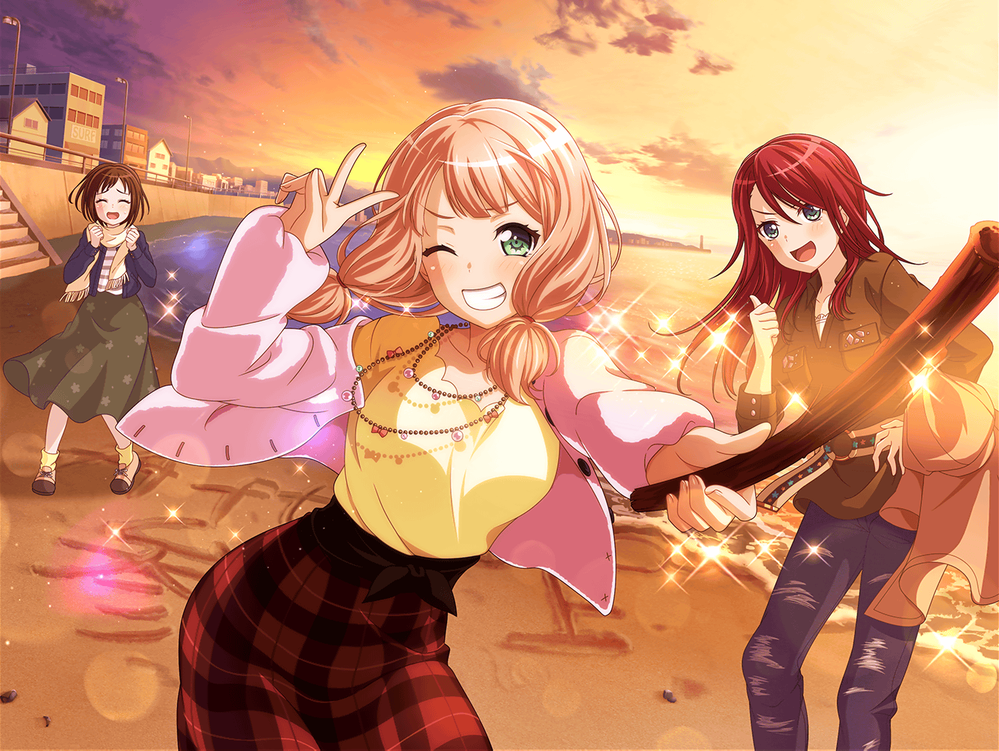
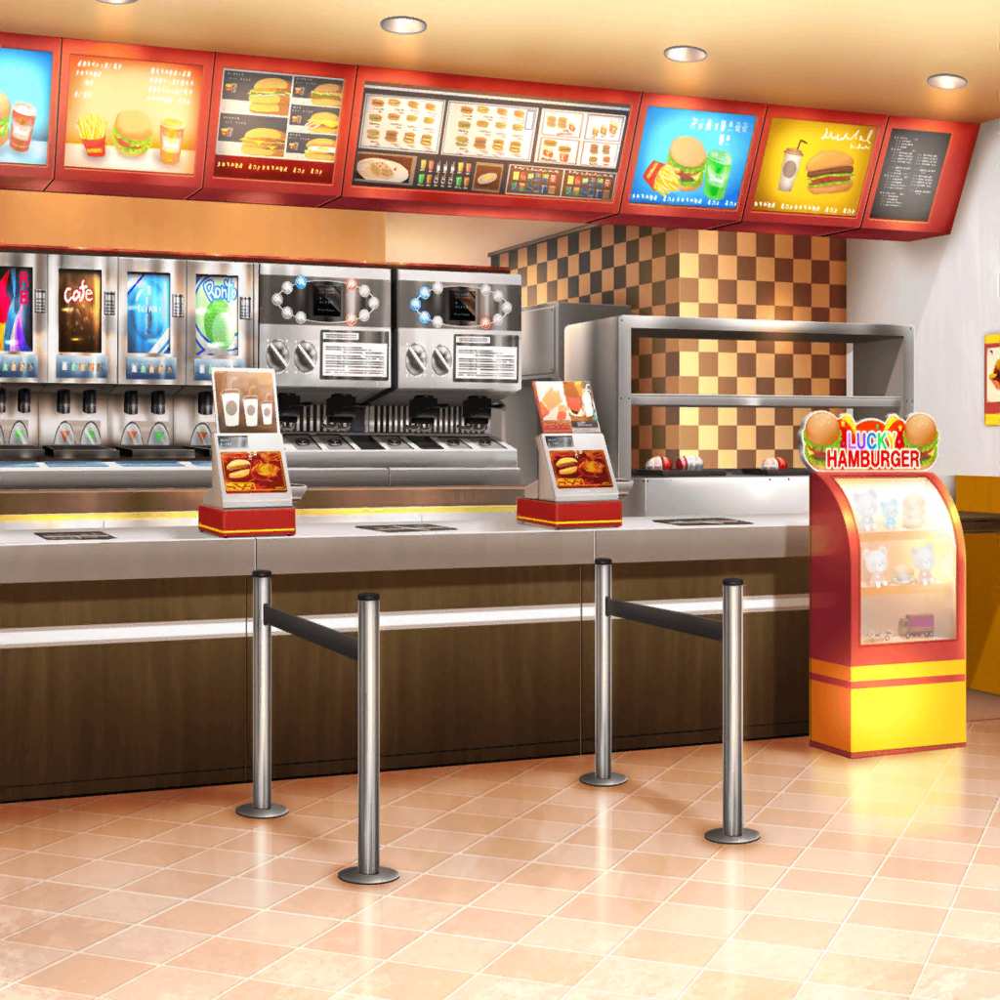

ファーストフード店
モカ
ひーちゃん、またこの前の写真見てるー
ひまり
だってーおもしろかったんだもん。
それにさ、この写真って何回見ても飽きないっていうかー……
ひまり
あ、この写真もお気に入りなの！
水族館で撮ったやつもいいよねぇ
モカ
確かに。
蘭のタコさんタオルはいいと思う
ひまり
だよね、だよねー！
あ……
モカ
そういえば、蘭ってあのタオルどうしたんだろー。
ちゃんと使ってるのかなー
モカ
蘭のあのフードタオル姿、もっかい見たいなー
ひまり
んー……そうだねー……
モカ
ひーちゃん？
ねえ、ちゃんと聞いてるー？
ひまり
んー……
モカ
ちなみにモカちゃんはお風呂上りに愛用してるんだよー
洗い替え用にもう１枚買っておけばよかったかなー
ひまり
…………
モカ
ひーちゃん……
ひーちゃんってば！
ひまり
え？
あ、ごめん。
どうしたの、モカ
モカ
……ひーちゃんひどいなー。
どうしたのじゃないよ。
大体、さっきからスマホばっかりじゃん〜
ひまり
ごめんごめん、井ノ島の写真にクラスの子が
コメントつけてくれたから返事してたんだ
モカ
え〜。それ、今返さないとダメなの〜？
ひまり
でもせっかくコメントくれたんだから
なるべく早く返してあげたいなって
モカ
ちょっと〜。あたしとスマホ、どっちが大事なのー？
モカちゃん、かなしみー
ひまり
ご、ごめんって〜！
ひまり
でもさ……モカ達はぜんっぜんコメントしてくれないじゃん。
ちょっとは反応してよ～！
モカ
つぐがコメントしてたからいーじゃん
ひまり
つぐだけだよ！
モカも蘭も巴もスルーでしょ
ひまり
まあ、一緒に行ったからコメントも何もないかもだけどさ、
だったらせめて『イイネ』ぐらいしてほしいなーって
モカ
イイネ〜
ひまり
もぉ〜！
ていうか、そもそもモカって私のSNS見てる？
モカ
んー……多分
ひまり
多分って何……はぁ、きっと蘭と巴も見てないんだろうなぁ。
つぐだけだよ、SNSで相手してくれるの……
モカ
クラスの子が反応してるんだからいいんじゃないのー？
それにーモカちゃんはリアルの関係を重視するタイプなんで
ひまり
私だってリアルの関係を重視してるって！
モカ
ひーちゃん、さっきあたしの話１ミリも
聞いてなかったじゃんー？
ひまり
う……そ、それはそうだけど……
モカ
そもそもさー、こうやって話せばいいのに
なんでSNSで交流するのー？
ひまり
なんでって……みんなのこと色々知れておもしろいじゃん！
一緒にいなかった時、どんなことしてたのかなーとか
モカ
次会ったときに話聞けばよくない？
ひまり
お互いの予定がつかなかったり、ゆっくり話す時間が
とれないかもしれないし……
ひまり
SNSだったら、お互いの都合があわなくても、
何して遊んだとか、どこへ行ってきたとか報告できるし
知ることもできるよ
モカ
えー。そこまで知りたい？
ひまり
モカってそういうところドライだよねー
モカ
モカちゃんだけじゃないと思いまーす。
トモちんと蘭もそうでしょー。文字だけだと
どういう感じなのかわかんないしさー
ひまり
……はぁ、みんな冷たい冷たい。
SNSはリアルの延長線なんだから
リアルと同じような付き合いしてもいいのに
モカ
延長しなくていいんじゃないのー？
ひまり
延長したら、その分話が盛り上がるよ！
例えば、モカが昨日の夜、何食べたかってことを
SNSにあげればその話題でおしゃべりできるでしょ
モカ
んー、その話題なくても
ひーちゃんとおしゃべりできるよー？
モカ
だってさー小学校のころとかはSNSやってなくても
話すこといーっぱいあったよ
ひまり
それは確かに……
で、でも、SNSにあげることによって思い出が残るし！
ひまり
ああ、この前はみんなでお出かけしたなーとか
去年の今頃はこんなことしてたんだーって
振り返ることもできるでしょ
モカ
モカちゃんの記憶力をなめないでほしーなー。
楽しいことも、悲しいこともぜーんぶ覚えてるからねー
モカ
ひーちゃん、もしかしてあたし達との思い出、
忘れちゃったの〜！？ モカちゃん再びかなしいよ〜
ひまり
覚えてるけどー！ まぁ、気が向いたら反応してよ！
もう、さっきみたいに直接『イイネ』って
言ってくれたらいいから
モカ
いや〜、それはそれで意味ない気がするけど
ひまり
もうそれでいいのー！
モカ
ほらほら〜、そんな話してたら、リアルのフライドポテトが
冷めちゃったよ
ひまり
えっ！？ わ、ほ、ホントだ……
モカ
あはは〜。ひーちゃん今のリアクション、
『イイネ〜』